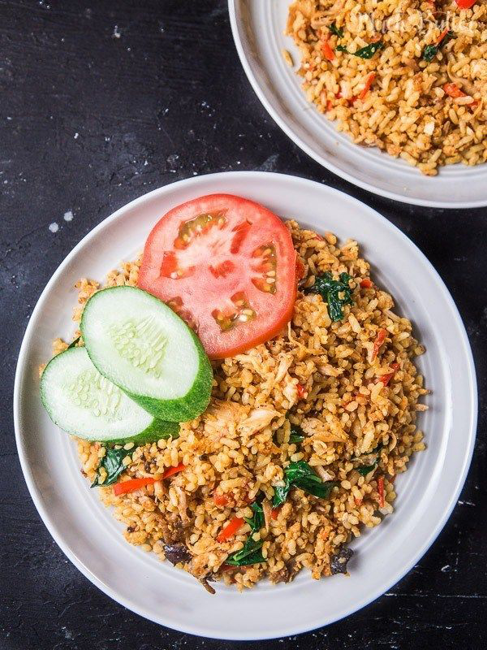

Bahan (untuk 1 porsi):
1 piring nasi putih
1 sendok makan minyak goreng
Bumbu:
1 siung bawang putih
1 butir bawang merah
1/2 sendok teh merica bubuk
1/2 sendok teh garam
1/4 sendok teh gula pasir
Cara membuat nasi goreng sederhana:
Kupas bawang merah dan bawang putih. Kemudian cincang halus keduanya.
Panaskan minyak goreng di penggorengan dengan api kecil. Kemudian tumis bumbu-bumbu sampai harum. Jangan sampai gosong. Waktu penumisan yang dibutuhkan kira-kira hanya 15 detik.
Masukkan nasi putih ke dalam tumisan bumbu. Aduk hingga rata kira-kira 5 menit atau sampai nasi berubah warna.
Setelah matang, angkat nasi dari penggorengan. Sajikan dalam keadaan hangat.
Kembali